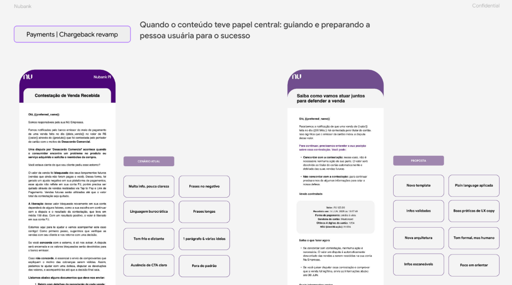
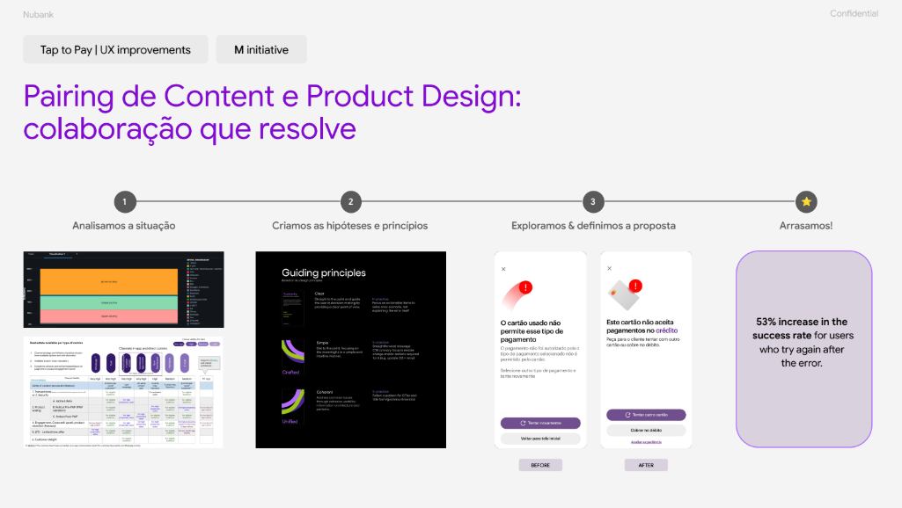
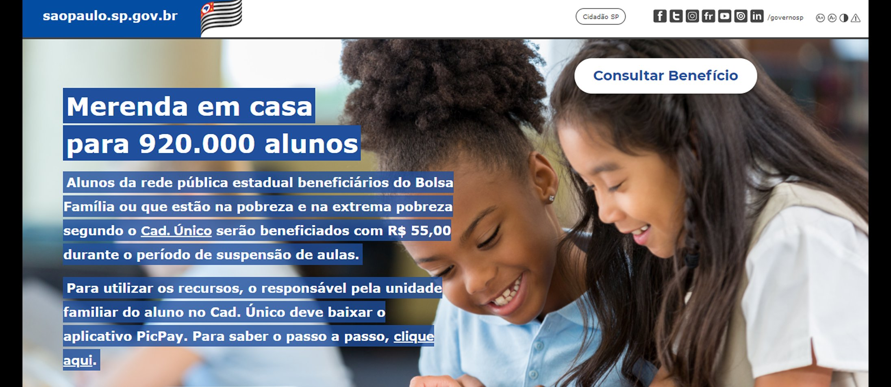
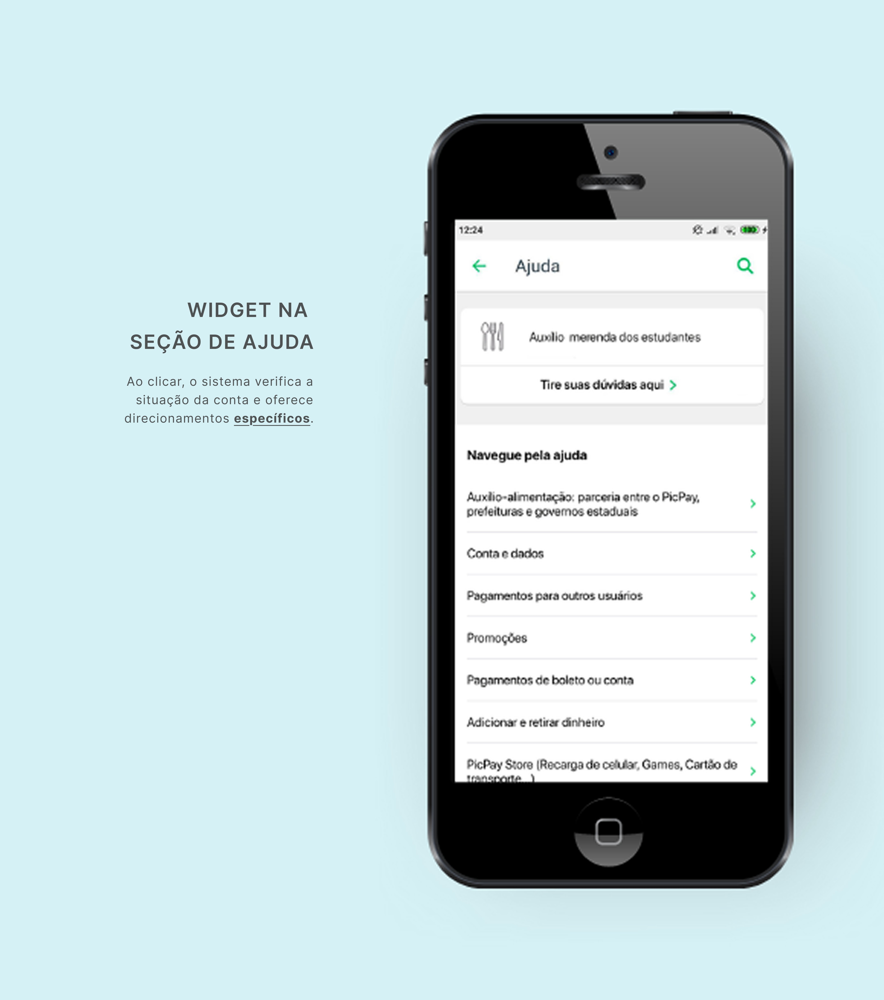

7+ anos conectando estratégia de conteúdo a resultados mensuráveis em fintechs brasileiras. Nubank e PicPay.
7+ years connecting content strategy to measurable outcomes at Brazilian fintechs. Nubank and PicPay.
Cases selecionados
Selected work
06
Em breveSoon
POV
Processos com IA
Working with AI
Como integro IA generativa no meu processo de trabalho
How I integrate generative AI into my workflow
Nubank PJ · 2025
Chargeback Revamp
Estratégia de conteúdoContent strategyTom de vozVoice & toneDadosDataCross-squad
Contexto
Context
O volume de contestações de vendas no Nubank PJ crescia na mesma proporção que o negócio — chegando a 2,3 mil casos por mês. O processo era manual (85% dos casos exigiam acompanhamento humano), fragmentado entre múltiplas equipes, e deixava o cliente no escuro sobre o que estava acontecendo com seu dinheiro.
The volume of sales disputes at Nubank PJ was growing at the same pace as the business — reaching 2,300 cases per month. The process was manual (85% of cases required human follow-up), fragmented across multiple teams, and left customers in the dark about what was happening to their money.
Problema
Problem
O tNPS das contestações estava em -2,17% — muito abaixo da meta de 70 para PJ — e cerca de 40% dos vendedores afetados entravam em contato com o suporte com uma mesma dúvida: "Cadê meu dinheiro?". A causa raiz era um apagão de dados no meio do processo: a informação existia, mas não estava integrada nem acessível onde era necessária.
The chargeback tNPS stood at -2.17% — well below PJ's target of 70 — and around 40% of affected merchants contacted support with the same question: "Where's my money?" The root cause was a data blackout in the middle of the process: the information existed, but wasn't integrated or accessible where needed.
O que fiz
What I did
Mapeei a jornada completa da contestação e identifiquei os pontos críticos de atrito por meio de análise de dados de atendimento e desk research
Defini a content strategy do fluxo, unificando terminologias e criando diretrizes de tom de voz específicas para comunicações de alta fricção
Redesenhei as comunicações transacionais e criei guidelines para material de treinamento dos agentes internos, aplicando os princípios "jogamos no mesmo time" e "clareza gera confiança" — aprovados com Marketing
Conduzi sessões de alinhamento com designers, PMs e times de Payments PJ e operações
Criei guidelines de linguagem e integrei Gemini Gems para criação e auditoria de conteúdo de operações — FAQ, macros e e-mails
Propus nova régua de comunicação para contestações PJ, ampliando as iterações para uma proposta mais alinhada com as necessidades do cliente PJ
Em parceria com Product Ops, estudei proposta para organizar e usar dados internos como suporte à UX (proposta do Shuffle de contestação)
Mapped the full chargeback journey and identified critical friction points through support data analysis and desk research
Defined the content strategy, unifying terminology and creating tone-of-voice guidelines specific to high-friction communications
Redesigned transactional communications and created guidelines for internal agent training, applying "we're on the same team" and "clarity builds trust" principles — approved with Marketing
Led alignment sessions with designers, PMs, and Payments PJ and operations teams
Created language guidelines and integrated Gemini Gems for operations content creation and auditing — FAQs, macros, and emails
Proposed a new communication ruleset for PJ chargebacks, expanding iterations toward a solution more aligned with PJ customer needs
In partnership with Product Ops, studied a proposal to organize and leverage internal data to support UX (the Shuffle chargeback proposal)
Mapeamento da jornada de contestação — pontos de atrito, volume de contatos de suporte e gaps de informação identificados.Chargeback journey mapping — friction points, support contact volume, and information gaps identified.
Artefatos de Content Design — terminologias unificadas, diretrizes de tom de voz e guidelines de linguagem.Content Design artifacts — unified terminology, tone-of-voice guidelines, and language guidelines.Nova régua de comunicação para contestações PJ — iterações ampliadas para maior alinhamento com as necessidades do cliente.New communication ruleset for PJ disputes — expanded iterations to better align with customer needs.

Quando o conteúdo guia e prepara — redesign das comunicações de contestação com foco em clareza, redução de atrito e protagonismo do usuário.When content guides and prepares — chargeback communications redesigned around clarity, friction reduction, and user empowerment.Primeira entrega sugerida — fluxo de processo e prototipagem da solução de visibilidade de dados para o cliente PJ.First suggested delivery — process flow and prototyping of the data visibility solution for PJ customers.
+92%
engajamento nas comunicações — taxa de resposta de 13,55% → 26,07% apenas com mudança de conteúdo, implicando em −42% de tickets de atendimento
communications engagement — response rate from 13.55% → 26.07% through content changes alone, resulting in −42% in support tickets
Nubank Seguros · CoE · 2023
Content Metrics
Liderança de iniciativaInitiative leadershipUX MetricsHeart FrameworkCross-empresaCompany-wide
Contexto
Context
Conteúdo sem métrica e acionável claro é conteúdo sem voz dentro do negócio. Liderei uma iniciativa para criar um processo sistemático de mensuração de impacto de Content Design dentro da BU de Seguros do Nubank — conectando dados qualitativos de experiência com métricas de produto.
Content without clear, actionable metrics has no voice in the business. I led an initiative to create a systematic process for measuring Content Design impact within Nubank's Insurance BU — connecting qualitative experience data with product metrics.
Problema
Problem
As decisões de conteúdo eram tomadas sem base em dados de experiência do usuário. Não havia processo para medir se o conteúdo estava gerando confiança, engajamento ou entendimento do produto — pilares dos nossos produtos. Isso minava o impacto de CD nas discussões estratégicas do negócio.
Content decisions were made without user experience data. There was no process to measure whether content was building trust, driving engagement, or enabling product understanding — all core pillars of our products. This undermined CD's impact in strategic business discussions.
O que fiz
What I did
Adaptei o Heart Framework para criar objetivos de mensuração conectados às metas da BU
Desenvolvi e refinei o SAS (Satisfaction Score) específico para seguros, passando de 8 para 6 atributos após validação com UXR
Rodei o piloto com ~55k clientes de Life Insurance (2.647 respostas, ~4% de taxa de resposta)
Apresentei resultados e next steps para lideranças de produto e design
Fui convidada para co-criar o UX Metrics Playbook oficial do Nubank como parte do CoE cross-empresa, ao lado de 8 especialistas de diferentes BUs
Adapted the Heart Framework to create measurement objectives connected to BU goals
Developed and refined the SAS (Satisfaction Score) specific to insurance, reducing from 8 to 6 attributes after UXR validation
Ran the pilot with ~55k Life Insurance customers (2,647 responses, ~4% response rate)
Presented results and next steps to product and design leadership
Was invited to co-create Nubank's official UX Metrics Playbook as part of a cross-company CoE, alongside 8 specialists from different BUs
Fast recap da iniciativa — o que é Content Metrics, por que importa e como conecta dados de experiência a decisões estratégicas.Initiative fast recap — what Content Metrics is, why it matters, and how it connects experience data to strategic decisions.
Documento de validação do SAS — especificação dos 6 atributos de satisfação e metodologia de mensuração para Life Insurance.SAS validation document — specification of the 6 satisfaction attributes and measurement methodology for Life Insurance.Task Force UX Metrics (Q2/2023) — relatório de impacto trimestral do CoE cross-empresa do qual fiz parte como co-autora do playbook.UX Metrics Task Force (Q2/2023) — quarterly impact report from the cross-company CoE, where I co-authored the playbook.
Resultados do teste — uplift de conversão de +92% a +126% nas variantes priorizadas pelo framework de Content Metrics.Test results — conversion uplift from +92% to +126% on the variants prioritized by the Content Metrics framework.
Análise da experiência de contratação de seguro — pontos de atrito identificados no copy que embasaram as priorizações do framework.Insurance purchase experience analysis — copy friction points identified that informed the framework's prioritizations.Próximos passos — roadmap de evolução do projeto com milestones planejados e sugeridos para escala e documentação.Next steps — project evolution roadmap with planned and suggested milestones for scaling and documentation.
Growth Content Metrics Q3/2023 — apresentação da evolução da iniciativa e resultados acumulados ao longo do trimestre.Growth Content Metrics Q3/2023 — presentation of initiative evolution and cumulative results across the quarter.
+16%
conversão na variante testada a partir das prioridades do Content Metrics; piloto integrou playbook adotado como padrão institucional de métricas de UX no Nubank
conversion on the Content Metrics-prioritized tested variant; pilot contributed to the playbook adopted as Nubank's institutional standard for UX metrics
Nubank PJ · 2025
Tap to Pay: Error Flow
UX CopyDadosDataIteraçãoIteration
Contexto
Context
O Tap to Pay é o produto de pagamentos presenciais do Nubank para pequenos e médios empreendedores. A experiência de erro era um gargalo crítico: a taxa de sucesso inicial era de apenas 11%, gerando atrito, abandono e contatos de suporte.
Tap to Pay is Nubank's in-person payment product for small and medium merchants. The error experience was a critical bottleneck: the initial success rate was just 11%, generating friction, abandonment, and support contacts.
Problema
Problem
A UX copy das mensagens de erro não comunicava com clareza o que havia falhado nem o que o usuário deveria fazer. Os dados de interação mostravam que a maioria das pessoas abandonava o fluxo ao encontrar um erro, sem tentar novamente.
The UX copy in error messages failed to clearly communicate what had gone wrong or what the user should do next. Interaction data showed that most people abandoned the flow upon hitting an error, without retrying.
O que fiz
What I did
Analisei dados de interação para identificar os erros mais frequentes e seus padrões de abandono
Dei suporte ao spike de engenharia para obter mais visibilidade da causa raiz dos erros e confiabilidade das informações
Trabalhei em parceria com a Product Designer para redesenhar a UX copy de cada estado de erro
Apliquei enquadramento baseado em dados para priorizar as melhorias de maior impacto
Propus o novo conteúdo e iteramos em duas rodadas até atingir resultado estatisticamente relevante
Analyzed interaction data to identify the most frequent errors and their abandonment patterns
Supported the engineering spike to gain visibility into error root causes and information reliability
Partnered with the Product Designer to redesign UX copy for each error state
Applied data-based framing to prioritize highest-impact improvements
Proposed new content and iterated through two rounds until achieving statistically relevant results

Pairing de Content e Product Design — da análise de dados ao redesign dos estados de erro, com resultado de +53% na taxa de sucesso de quem tenta novamente.Content and Product Design pairing — from data analysis to error state redesign, resulting in +53% success rate for users who retry after an error.
+53%
taxa de sucesso — de 11% para 17%, em duas iterações de conteúdo
success rate — from 11% to 17%, across two content iterations
Nubank PJ · 2025
Content Guide com IA
AI-Powered Content Guide
IA generativaGenerative AIEscalabilidadeScalabilityGovernançaGovernance
Contexto
Context
Com um time de Content Design distribuído entre múltiplos squads em PJ, garantir consistência de narrativa e qualidade de copy em escala era um desafio operacional real. Liderei o pack de AI dentro da workstream de excelência em design cross-PJ para criar uma solução escalável.
With a Content Design team distributed across multiple squads in PJ, ensuring narrative consistency and copy quality at scale was a real operational challenge. I led the AI pack within the cross-PJ design excellence workstream to create a scalable solution.
Problema
Problem
O tempo gasto para validar narrativa e copy em cada tela era alto e o processo dependia de revisão manual. Sem um mecanismo de escala, a consistência de marca ficava comprometida à medida que o time crescia.
The time spent validating narrative and copy for each screen was high, and the process depended on manual review. Without a scaling mechanism, brand consistency was at risk as the team grew.
O que fiz
What I did
Estruturei o processo e os artefatos da POC do Content Guide powered by IA
Defini os parâmetros de avaliação da Gem: narrativa, voz, glossário, clareza de copy, redução de atrito e alinhamento com diretrizes do Nu
Gravei demonstrações em tempo real para evangelizar o uso no chapter
Conduzi o kickoff e o período de testes com coleta de feedback contínuo
Centralizei as decisões de content design no Content Guide AI, garantindo atualizações acessíveis para toda a empresa
Structured the process and artifacts for the AI-powered Content Guide POC
Defined the Gem's evaluation parameters: narrative, voice, glossary, copy clarity, friction reduction, and Nu guidelines alignment
Recorded real-time demos to evangelize usage across the chapter
Led the kickoff and testing period with continuous feedback collection
Centralized content design decisions in the Content Guide AI, ensuring updates were accessible company-wide
Demonstração da POC — Content Guide powered by AI em uso real, validando narrativa, voz e copy em tempo real.POC demo — AI-powered Content Guide in real use, validating narrative, voice, and copy in real time.
−90%
redução estimada no tempo de validação de copy (de dias para minutos); 84% de adesão dos designers nos primeiros 30 dias
estimated reduction in copy validation time (from days to minutes); 84% designer adoption in the first 30 days
PicPay · 2020
Merenda em Casa
Comunicação de criseCrisis communicationImpacto socialSocial impactAutoatendimentoSelf-serviceWar Room
Contexto
Context
No início de 2020, o governo do estado de SP lançou o programa Merenda em Casa para famílias de alunos da rede pública. O PicPay foi escolhido como plataforma de pagamento — e precisava onboar milhares de usuários de baixa renda e diretores de escola em tempo recorde, em meio a uma crise de saúde pública.
In early 2020, the São Paulo state government launched the Merenda em Casa program for public school families. PicPay was chosen as the payment platform — and needed to onboard thousands of low-income users and school principals in record time, amid a public health crisis.
Problema
Problem
O volume de contatos com o suporte explodiu: pessoas com direito ao benefício, mas que não tinham feito o cadastro corretamente, entravam em contato com dúvidas — e escolas estavam sendo acionadas pelas famílias para ajudá-las a criar conta e usar o app. Não havia autoatendimento eficiente nem material de apoio adequado para esses públicos.
Support contact volume exploded: people entitled to the benefit but who hadn't registered correctly were reaching out with questions — and schools were being contacted by families for help creating accounts and using the app. There was no efficient self-service or adequate support materials for these audiences.
O que fiz
What I did
Conduzi desk research com análise de dados do atendimento e categorização nas plataformas internas
Participei da definição da estratégia e dos critérios de sucesso com lideranças em contexto de War Room
Criei e validei o canvas de conteúdo e storytelling para a feature de autoatendimento priorizada
Desenvolvi material de apoio para diretores e diretoras de escola — manual PicPay para Auxílio COVID-19
Participei da construção do contrato entre produto e time técnico, testes em QA e acompanhamento em produção
Conducted desk research with support data analysis and internal platform categorization
Participated in strategy and success criteria definition with leadership in a War Room context
Created and validated the content canvas and storytelling for the prioritized self-service feature
Developed support materials for school principals — PicPay Manual for COVID-19 Aid
Participated in the product-engineering contract, QA testing, and production monitoring

O contexto: o site oficial do governo de SP comunicava o programa, mas o fluxo de cadastro gerava dúvidas em massa.The context: the SP government's official website communicated the program, but the registration flow generated a flood of questions.
Modal de consulta no site do governo — ponto de entrada que gerava confusão e volume de suporte.Government site lookup modal — the entry point driving confusion and support volume.

Widget na seção de Ajuda do app: ao tocar, o sistema verificava a situação da conta e oferecia direcionamentos específicos.Help section widget in the app: on tap, the system checked account status and offered specific guidance.
Manual PicPay Auxílio COVID-19 — entregue online e impresso para diretores e diretoras de escola de SP.PicPay COVID-19 Aid Manual — delivered online and in print to school principals across SP.
−86%
redução nos contatos de suporte relacionados ao programa